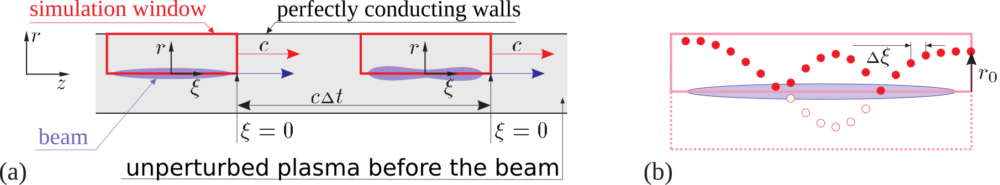

LCODE framework
LCODE is a freely-distributed code for simulations of particle beam-driven plasma wake eld acceleration. The code is 2-dimensional (2d3v), with both plane and axisymmetric geometries possible. In the code, the simulation window moves with the light velocity, and the quasi-static approximation is used for calculating plasma response. The beams are modeled by fully relativistic macro-particles. The plasma is modeled either by macro-particles (kinetic solver), or as the electron uid ( uid solver). Transversely inhomogeneous plasmas, hot plasmas, non-neutral plasmas, and mobile ions are possible with the kinetic solver. The code is furnished with extensive diagnosing tools which include the possibility of in-flight graphical presentation of the results.
The essence of the quasi-static approximation is illustrated by Figure 1. When we calculate the plasma response, the beam is considered as a rigid (not evolving in time) distribution of charges and currents which propagates with the speed of light c. The elds generated by this beam depend on the longitudinal coordinate z and time t only in combination ξ = z - ct. and can be found layer-by-layer starting from the beam head. Since the beam is not changing, all particles started from some transverse position r0 copy the motion of each other, and their parameters (transverse coordinate and momenta) can be found as functions of ξ. Thus, a plasma macroparticle in the quasi-static model is not a "big" particle, but a particle tube, i.e., a group of real particles started from a given radius with a given initial momentum. This greatly reduces the memory required for storing plasma particles.

Figure 1: Geometry of the problem (a), and trajectory of a plasma particle in the simulation window (b).
The calculated fields are then used to modify the beam. For highly relativistic beams, the time step ∆t for beam particles can be made large, which speeds up simulations several orders of magnitude. The quasi-static approximation is thus useful if and only if the time scale of beam evolution is much longer than the period of plasma wave.
LCODE 2D
- Latest stable user's manual
- Executable files:
- Examples of use:
- Baseline variant for AWAKE experiment
- Equidistant bunch train to produce Fig.2b from Phys. Plasmas 20, 083119 (2013)
Feel free to contact us at team@lcode.info for assistance and consultation.